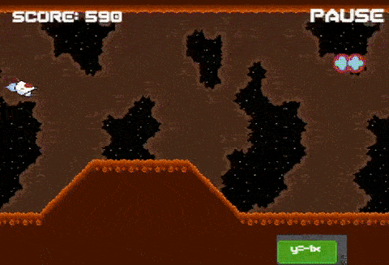
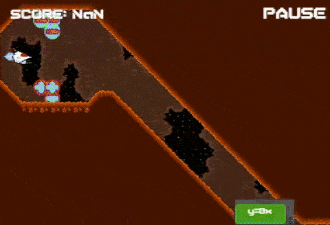

Function Force
Background
Function Force is an educational game to teach middle-schoolers linear algebra (y=mx + b).

Title Screen.
Function Force was originally conceived during a game jam at the White House by my professors at American University.
Our task (myself and two other students) was to redesign the core concept and make it our own, over the course of a semester, for ETS to use as
part of an initiative of game based tests (developed in early 2017). I did all the level and puzzle design, as well as some of the art.
I was also key in the systems design, however, it was a very collaborative process where we all built off of each other’s ideas, and I enjoyed it very much.
Concept
Although the original function force was technically a shoot ‘em up game, in practice it played more like a puzzle game. We decided to emphasize the real-time nature of a shoot ‘em up game.

The slider based system for operating the gun using the mouse is at odds with controlling the ship itself.
Responding to moving threats would be very difficult for players.
Dilemma
Function Force was sponsored primarily as a game-based testing application, which is at odds with the dextrous nature of a shoot ‘em up game. Ideally, test administrators would be able to measure mastery over mathematical concepts distinctly from the skill involved in playing a game. How can we, as the designers, deliver a sterile testing environment while also making a fun shoot ‘em up?
Solution
Our solution was to split up levels into shooting sections and puzzle sections, with shooting sections containing soft teaching/testing moments and puzzle sections requiring only mastery over the mathematical content to progress.

Although players could avoid enemies, levels and content were designed to foster the use of a laser which follows the y=mx+b formula.
Scoring helps to record whether the player was able to destroy enemies or only avoid them.
ETS let us know that they wanted more testable moments, moments where they could tell whether or not the student had mastered the concept. This translated for me to designing content which was impossible without the correct formula plugged into your laser. With that in mind I came up with and designed the tunnel sub-sections found in some portions of the shooting sections.

Only the tunnel sections required mastery over the mathematical concept.
Dilemma 2
Can we include a progression system to introduce the content to players in a staggered manner? We’d like to foster engagement and support a staggered difficulty/learning curve.
Solution
Our solution was to introduce powerups (called satellites) which act as extra guns that fly next to your original ship, similar to upgrading your laser in other shoot ‘em ups. Originally we were thinking of sine wave lasers, reflective surfaces, and other ways to implement satellites (such as dropping them at locations as consumable), but decided on this implementation due to its synergy with shoot ‘em up mechanics and its usefulness and simplicity in both puzzle and shooting sections.

Power-ups (Satellites) which follow the player and can be adjusted via the testing content (y=mx+b).
The puzzle sections that we introduced had a scaling difficulty to them. As players collected more satellites the puzzles became harder because players would have to hit more "locks" with their lasers to progress. What was initially a simple puzzle mechanic became an interesting and powerful testing mechanism.

A puzzle section in the later stages of the game.
It requires players to hit 3 locking mechanisms at the same time to progress.
Having a progression system with these elements enabled:
-More complex puzzles to test the player’s understanding of core mathematical concepts
-The ability to teach and test a deeper understanding of y=mx+b
-More space for player improvement and play
Conclusion
By splitting up the game into shooting and puzzle sections, we were able to pace the experience such that it is constantly engaging.
This also allowed for a variety of testable/teachable moments through the level and enemy design.
Additionally, adding satellites introduced the ability to have more complex puzzles and difficult enemies, both of which increase player enjoyment.
We were effectively able to take a concept and effectively change it’s implementation to better suit both the client’s needs and the medium.